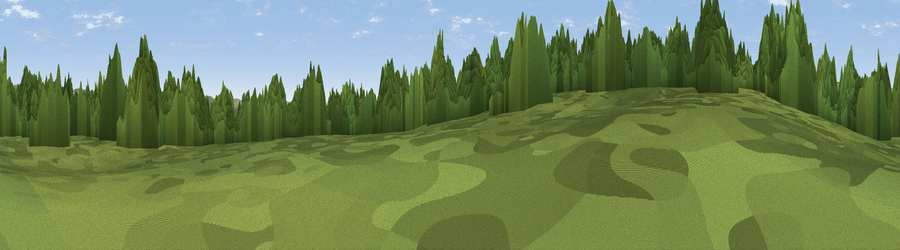

Viewpoint near Falstone
#39970 in England · top 85% of its area beats it · near FalstoneWhere it is
The exact computed spot (NY 73775 92775). Click the marker for map links.
The view, rendered

A 360° render of this exact spot computed from the terrain model, tree cover and land cover — summer colours, afternoon light, calibrated against photographs of famous viewpoints. Real trees, hedges and buildings will differ in detail.
The panorama
Grey silhouette: terrain skyline in each direction (720 bearings, Earth curvature and refraction included). Dashed green: skyline with trees (+15 m) and buildings (+8 m) as obstacles. Blue strip: how far the ground is visible on each bearing.
Where the view opens
Wedge length = distance to the farthest visible ground on that bearing (vegetation-aware). Rings at 10, 25 and 50 km.
What fills the view
54% woodland · 46% grassland
Angular shares of the visible panorama (visual magnitude), not map area. Landscape diversity 0.30 (0–1 Shannon).
Key numbers
More beautiful places nearby
The staircase of upgrades: each row has a higher view potential than everything closer. Driving times are estimates from straight-line distance, calibrated against real road routing — check an actual route before setting out.
| Place | Direction | Drive | Score |
|---|---|---|---|
| Earl's Seat | W · 3 km | ~7 min | 67.4 |
| Viewpoint near Byrness | NNE · 5 km | ~11 min | 68.0 |
| Viewpoint near Greenhaugh | ESE · 5 km | ~12 min | 68.3 |
| Blackman's Law | N · 5 km | ~12 min | 74.1 |
| Monkside | WNW · 6 km | ~12 min | 78.4 |
| Deadwater Fell | WNW · 12 km | ~22 min | 79.4 |
| Viewpoint c11995_7247 | WNW · 13 km | ~25 min | 82.1 |
| Viewpoint c12273_7856 | NE · 28 km | ~45 min | 83.7 |
55.22849, -2.41385 · source: screening · position refined by local search. Computed location — check access rights before visiting.